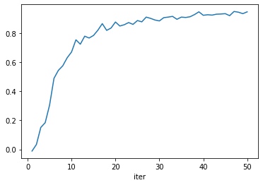

Neuroevolution in EvoTorch¶
EvoTorch provides extensive native support for neuroevolution through the evotorch.neuroevolution sub-package and the NEProblem class. This page details the various features of this sub-package.
General Usage¶
To use neuroevolution, you can define a function that evaluates a single torch.nn.Module instance and returns a scalar fitness.
Let's consider a simple fitness function: We wish to train a network that takes a vector of length 3 as input, and produces a scalar output, such that the sign of its output is the same as the sign of the sum of its inputs. To train this network, we choose a reward of +1 when the output has the correct sign, and -1 otherwise. We also choose a batch size of 32. The goal of our neuroevolution task is to maximise the average reward.
import torch
from evotorch.tools import dtype_of, device_of
def sign_prediction_score(network: torch.nn.Module):
# Generate 32 random gaussian vectors
samples = torch.randn((32, 3), dtype=dtype_of(network), device=device_of(network))
# Apply the network to the gaussian vectors
network_out = network(samples)
# Get the sign of the single output
sign_out = torch.sign(network_out[:, 0])
# Get the sign of the sum of the inputs
sign_sum = torch.sign(samples.sum(dim=-1))
# Number of times the network was correct
reward_gained = (sign_sum == sign_out).to(torch.float).sum()
# Number of times the network was incorrect
reward_lost = (sign_sum != sign_out).to(torch.float).sum()
return (reward_gained - reward_lost) / 32
A NEProblem class can then be instantiated according to: an objective_sense ('min' or 'max'), a network definition (a torch.nn.Module instance, a torch.nn.Module class, a function returning a torch.nn.Module instance or a string representation of a network -- see below) and network_eval_func, our fitness function:
from evotorch.neuroevolution import NEProblem
sign_prediction_problem = NEProblem(
# The objective sense -- we wish to maximize the sign_prediction_score
objective_sense="max",
# The network is a Linear layer mapping 3 inputs to 1 output
network=torch.nn.Linear(3, 1),
# Networks will be evaluated according to sign_prediction_score
network_eval_func=sign_prediction_score,
)
Applying PGPE to this problem with a default configuration
from evotorch.algorithms import PGPE
from evotorch.logging import PandasLogger
searcher = PGPE(
sign_prediction_problem,
popsize=50,
radius_init=2.25,
center_learning_rate=0.2,
stdev_learning_rate=0.1,
)
logger = PandasLogger(searcher)
searcher.run(50)
should give some observable learning, as seen in the plot below.
Output

You can directly access a parameterized version of the network using the parameterize_network function. For example, the below code will generate an instance of the Linear network we defined earlier, parameterized with the \(\mu\) vector learned by the PGPE instance searcher.
You can use the trained network, for example by passing an input that has a positive sum
or by passing an input that has a negative sum
Of course, you can also create a custom NEProblem instance by inheriting from that class. In this case, you simply need to override the _evaluate_network function with your desired fitness function:
class CustomNE(NEProblem):
...
def _evaluate_network(self, network: torch.nn.Module) -> torch.Tensor:
# Generate random gaussian vectors
samples = self.make_gaussian((32, 3))
# Apply the network to the gaussian vectors
network_out = network(samples)
# Get the sign of the single output
sign_out = torch.sign(network_out[:, 0])
# Get the sign of the sum of the inputs
sign_sum = torch.sign(samples.sum(dim=-1))
# Number of times the network was correct
reward_gained = (sign_sum == sign_out).to(torch.float).sum()
# Number of times the network was incorrect
reward_lost = (sign_sum != sign_out).to(torch.float).sum()
return reward_gained - reward_lost
Neuroevolution at Scale¶
When using NEProblem classes without modifying the num_actors argument (i.e., without enabling Ray parallelization), the network used for evaluation will simply use the same device as the problem's main device attribute. This means that
will mean that the network of the problem will, by default, live on the device cuda:0. However, if you specify a positive num_actors value,
Ray will by default block all of the actors from using any GPU and therefore every actor's network will live on the device cpu. You can work around this using the num_gpus_per_actor keyword argument,
problem = NEProblem(
...,
num_actors=16,
# I have 4 GPUs and 16 CPUs, so I assign 0.25 GPUs per actor
num_gpus_per_actors=(4 / 16),
)
which will specify a fraction of a device to assign to each ray actor. In this case, the actors' networks will live on the actors' assigned device. You can manually intervene with this behaviour by overriding the property network_device. For example,
from evotorch.tools.misc import Device
class CustomNE(NEProblem):
def __init__(self):
...
super().__init__(
num_gpus_per_actor="all",
)
@property
def network_device(self) -> Device:
"""The device on which the problem should place data e.g. the network"""
return torch.device("cuda:3")
will cause each of the actors to attempt to move their networks to the device cuda:3. However, you should note that ray, by default, overrides the CUDA_VISIBLE_DEVICES environment variable so that each actor cannot see any GPUs unless the num_gpus flag is passed at instantiation to the ray actor. We provide a workaround to this through the num_gpus_per_actor='all' keyword argument that is passed to super().__init__, which will specify that all actors should be able to see all of the devices. and the above overriding of network_device will function as expected.
Using the num_actors, num_gpus_per_actor arguments and the network_device property, you can straightforwardly scale your neuroevolution experiments to hundreds of CPU cores and dozens of GPUs across ray clusters.
Instantiating Networks¶
NEProblem supports a number of ways to instantiate networks. The first, as we have seen, is to pass a torch.nn.Module instance. In this case, the module will be copied to all actors when using num_actors > 1. However, we generally discourage this usage as it means that the network will be moved to the CPU and copied to all actors, which can be a very expensive operation when working at scale. We provide a number of functionalities that allow automatic instantiation of the network within the actor so that no such copying is required.
You can pass a string representation of the following form
Which will create a torch.nn.Sequential instance with each named torch Module class instantiated applied sequentially. For example, calling
network_str = "Linear(3, 32) >> Tanh() >> Linear(32, 1)"
problem = NEProblem(
objective_sense="max",
network=network_str,
network_eval_func=sign_prediction_score,
)
will cause a parameterized version of the network to return a torch.nn.Sequential module consisting of: torch.nn.Linear layer with 3 inputs and 32 outputs, a torch.nn.Tanh activation layer and a torch.nn.Linear layer with 32 inputs and 1 output.
Output
The third option is to pass to the NEProblem class a function which returns a torch.nn.Module instance. For example, we can define a function which returns the above network:
def my_network():
return torch.nn.Sequential(
torch.nn.Linear(3, 32),
torch.nn.Tanh(),
torch.nn.Linear(32, 3),
)
problem = NEProblem(
objective_sense="max",
network=my_network,
network_eval_func=sign_prediction_score,
)
print(problem.parameterize_net(problem.make_zeros(problem.solution_length)))
Output
As any class definition is callable through its __init__ method, this also means that you can directly pass a torch.nn.Module class which will be instantiated. For example:
class MyNetwork(torch.nn.Module):
def __init__(self):
super().__init__()
self.lin1 = torch.nn.Linear(3, 32)
self.act = torch.nn.Tanh()
self.lin2 = torch.nn.Linear(32, 3)
def forward(self, data):
return self.lin2(self.act(self.lin1))
problem = NEProblem(
objective_sense="max",
network=MyNetwork,
network_eval_func=sign_prediction_score,
)
print(problem.parameterize_net(problem.make_zeros(problem.solution_length)))
Output
Dynamically Parameterizing Networks¶
The problem class itself can directly pass arguments to any of these methods at instantiation, although it cannot for obvious reasons pass arguments to a torch.nn.Module class that is already instantiated. For example, in our earlier example, we had \(d\), the dimension of the input vector. By defining the _network_constants property, we can pass this information to the instantiation of the network:
class CustomNE(NEProblem):
def __init__(self, network: torch.nn.Module, k: int, d: int):
super().__init__(
objective_sense="max", # This is a maximization task
network=network, # Pass the network to the super constructor
)
self._d = d # Store d
@property
def _network_constants(self):
return {"d": self._d} # Pass self._d as 'd' to networks at instantiation
def _evaluate_network(self, network: torch.nn.Module): ...
which then allows, for example, the use of the variable d in the string representation of the network
policy_str = "Linear(d, 32) >> Tanh() >> Linear(32, 1)"
problem = CustomNE(
network=policy_str,
k=32,
d=15,
)
such that it is directly passed to the instantiation of the network. You can observe this by printing the network
Output
Similarly, you can now use d as an argument in your function definition
def my_network(d: int):
return torch.nn.Sequential(
torch.nn.Linear(d, 32),
torch.nn.Tanh(),
torch.nn.Linear(32, 3),
)
or as an argument to your class definition
class MyNetwork(torch.nn.Module):
def __init__(self, d: int):
super().__init__()
self.lin1 = torch.nn.Linear(d, 32)
self.act = torch.nn.Tanh()
self.lin2 = torch.nn.Linear(32, 3)
def forward(self, data):
return self.lin2(self.act(self.lin1(data)))
You can pass any further arguments to the network instantation, using the network_args keyword argument, expected as a dictionary. For example, if you specify that our network expects an integer argument hidden_dim:
class MyNetwork(torch.nn.Module):
def __init__(self, hidden_dim: int):
super().__init__()
self.lin1 = torch.nn.Linear(3, hidden_dim)
self.act = torch.nn.Tanh()
self.lin2 = torch.nn.Linear(hidden_dim, 1)
def forward(self, data):
return self.lin2(self.act(self.lin1(data)))
and then create a problem class, passing a particular hidden_dim through network_args:
problem = NEProblem(
objective_sense="max",
network=MyNetwork,
network_args={"hidden_dim": 17},
network_eval_func=sign_prediction_score,
)
print(problem.parameterize_net(problem.make_zeros(problem.solution_length)))
Output
will instantiate MyNetwork with the hidden_dim variable set to that value -- in this case, hidden_dim = 17.
Equivalently you can do
or